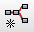

SAR Data
As optical data, Synthetic Aperture Radar (SAR) data need pre-processing to account for geometric distortions (layover and foreshortening) and for differences in illumination conditions due to topography (shadowing). Additionally, SAR data is often quite noisy because of backscattered radio signal from small features on the earth’s surface. This effect is referred to as salt-and-pepper effect, or speckle noise and needs to be removed by speckle filtering.
As you can see, depending on the application, SAR pre-processing can be quite complicated. The interpretation of SAR data becomes easier once the underlying principles are known and understood in detail. Therefore, it is advisable to attend the seminars “Remote Sensing and Digital Image Processing” and “Advanced Geomatics” in order to gain a basic understanding of the processing of radar and SAR data before you proceed.
Anyway, if you need further details about pre-processing SAR signals, have a look at the ESA tutorials.
This section guides you through two complete preprocessing workflows for Sentinel 1 imagery.
Produce Intensity Images from SLC data
– generate intensity images from S1 SLC data
– perform a calibration, terrain flattening and terrain correction
Gray-Level Co-Occurrence Matrix (GLCM) Texture Metrics
– generate 10 texture metrics (Contrast, Dissimilarity, Homogeneity, Angular Second Moment, Energy, Maximum Probability, Entropy, GLCM Mean, GLCM Variance, GLCM Correlation)
Intensity Images
We will process a Single Look Complex (SLC) Sentinel 1 scene in order to achieve its VV and VH polarized intensity images. A SLC product is provided in zero-Doppler slant-range geometry. The products include a single look in each dimension and consist of complex samples preserving the phase information.
If you need help with downloading Sentinel data, just have a look at the previous download chapter. The exemplary S1 scene was acquired over Berlin and shows an urban rural gradient.
Our workflow will contain the following sequential steps. The order of those steps is essential to derive pre-processed intensity images of that region:
- Read: Input – import a S1 scene
- ThermalNoiseRemoval: removes electrical fluctuations arising from the random thermal motion of electrons, continue reading
- Apply-Orbit-File: step for acquiring the satellite orbit file to get more precise orbit data to improve geocoding and other SAR processing results
- Calibration: corrects a SAR image so that the pixel values truly represent the radar backscatter of the reflecting surface. A calibration is essential for quantitative use of SAR data, continue reading
- TOPSAR-Deburst: S1 scenes are acquired using the Terrain Observation with Progressive Scans SAR (TOPSAR) technique, resulting in multiple adjacent sub-swaths and demarcation zones between those swaths. This module will remove those demarcation zones continue reading
- Terrain-Flattening: Radiometrically “flatten” the image, reducing terrain induced radiometric variations, which is especially important in heavily embossed areas
- Terrain-Correction: will geocode the image by correcting SAR geometric distortions using a digital elevation model (DEM) and producing a map projected product
- Subset: spatially or radiometrically subset the image. Spatial subsets dramatically speed up the whole processing!
- Write: Output – write all bands (mostly VH and/or VV) to a GeoTiff raster file
NOTE: Sentinel data, as well as the SNAP toolbox are subjects to constant changes and development. For example the proposed workflow includes the removal of thermal noise (ThermalNoiseRemoval), which momentarily cannot be applied to scenes acquired after March 23, 2018, as metadata formats changed (source). Remove this processing step to process data products acquired after this date.
Step by Step
First download the scene with the ID S1A_IW_SLC__1SDV_20170731T165159_20170731T165226_017718_01DAC6_7F9F.
S1 SLC files hold around 7 to 8 GB of data. So this may take some time. Do not unzip the file – this is not necessary and only consumes a lot of hard disk space!
Got the S1 scene (or another one)? – Then start SNAP now!
Open SNAP and click on the graph builder icon  in the Toolbar. You will see a new window pop up, which shows a standard graph (containing one Read and one Write node) in the upper area and some options in the lower area.

Right click somewhere in the white area at upper window to add new nodes, i.e., processing steps, to the graph. Navigate to the following nodes to add them to your graph:
- Read
- Add > Radar > Radiometric > ThermalNoiseRemoval
- Add > Radar > Apply-Orbit-File
- Add > Radar > Radiometric > Calibration
- Add > Radar > Sentinel-1 TOPS > TOPSAR-Deburst
- Add > Radar > Radiometric > Terrain-Flattening
- Add > Radar > Geometric > Terrain Correction > Terrain Correction
- Add > Raster > Geometric > Subset
- Write
Each processing step is visualized by a rectangle in the graph. You can drag those rectangles, or nodes, to whichever position you want with pressed left mouse button. Arrange the added nodes to something like this:

The individual nodes are not yet linked. If you rest the mouse pointer over the right edge of a rectangle, you will see a red arrow. Drag this arrow with pressed left mouse button to the next node in the following order:

Next, click on the Read Node and load your ZIP-compressed Sentinel 1 scene into the Source Product setting. This could take a short moment. Attention: From now on, it will always take a little while to switch back and forth between the processing nodes, as SNAP will process and read your data as virtual products in the background!
Now either click through the tabs at the bottom of the Graph Builder window or through the node rectangles to set the following options for all the nodes. You should try to make the settings in order, because graph building in SNAP is quite “fragile” and it may sometimes lead to strange errors, if the modules are not properly build on each other.
Calibration: as we will utilize the terrain flattening, we need to process the required beta0 band here.
Terrain Flattening: Uncheck the Re-grid method here, as it might cause some errors when the DEM resolution is lower than your source image data and you want to keep your source resolution.
Terrain Correction: Choose a Pixel Spacing in m for the final output product, as well as the adequate Map Projektion (WGS 84, EPSG:32633 in our example).
Subset: Limit the image data from the outset to your study area, if possible – because all processing steps are only applied to the subset, which saves an enormous amount of computation time. The spatial section in the Subset node should be made using the geographic coordinates. However, the linked map is quite blurred and therefore not much help. However, under the map you can define any spatial subset using the Well-Known Text (WKT) format. There are a number of simple online tools for creating such WKTs. Copy the entire “Polygon(())” expression into the line below the map within the subset Node and click on the update-button right to the right:
POLYGON((13.11 52.65, 13.70 52.65, 13.70 52.35, 13.11 52.35, 13.11 52.65))
When everything is set, you might want to save your graph. Simply click on “Save” on the bottom of the graph window and choose a file path. After that, start the graph via “Run”. Depending on the size of the study area and the processing nodes, this will take some time. If you run into some Java memory problems here, please refer to the troubleshooting section below.
Have a look at the Bulk Processing Section of this course to learn, how to automate the process for many datasets!
After processing is finished, you should get a GeoTiff-file that includes two channels: one VH and one VV intensity image. Those can be viewed directly in SNAP:

VV intensity image
In SNAP, you can view the image in decibel (dB) scaling by right-clicking on the intensity image band and select Linear to/from dB to convert the data with the expression 10*log10(Intensity_VV):

transform band to dB scaling
Double-click on the new Intensity_VV_db band to open it:

VV intensity image in dB scaling
Done!
EXERCISE:
However, it is possible to extend this workflow. As you can see, this intensity image is quite noisy. Try to reduce the salt and pepper effect by applying a Single-Product Speckle Filter to your graph by your own! Click on the button below to see a solution:
EXERCISE: ADD A SPECKLE FILTER
Troubleshooting
Since S1 data is very large (sometimes up to 8 GB per data set), a sufficiently large amount of RAM is required for preprocessing. Especially the calibration and speckle filtering operations are very memory hungry. Your Virtual Machine (or your computer) should be equipped with at least 8 GB of RAM (16 GB recommended for S1 processing). Red error messages, such as Cannot construct DataBuffer or Java Heap Space, indicate that too little RAM is available for your computer or Java.
Possible solutions:
– In the main toolbar of SNAP, click on Tools > Options. A new window will open, click on the Performance tab and modify the “-Xmx2048m” value in the first line, which says VM Parameter to something like “-Xmx8192m”. This will allocate more memory to the Java virtual machine.
– split the graph into smaller graphs and save the intermediate results.
Texture Metrics
In this section we want to derive the Grey-Level Co-occurrence Matrix (GLCM) texture measurements for a S1 VH intensity raster. However, this workflow is not exclusive for Sentinel 1 data. You can derive GLCM metrics for any given raster, i.e., optical or radat. Due to the low spectral resolution and comparably low signal-to-noise ratio of radar data, the texture metrics are predestined to extend the feature space with meaningful data, e.g., for classification or regression tasks.
Luckily, the derivation of GLCM is done in one command in SNAP. Nevertheless, we want to create a graph file that theoretically allows you to process a lot of data easily via GPT. Have a look at the Bulk Processing Section of this course to learn, how to automate the process for many datasets.
Our workflow will contain the following sequential processing nodes:
- Read: Input – import a S1 scene (or any other raster file)
- GLCM: process all GLCM metrics of your choice
- Write: Output – write all GLCM bands into one GeoTiff raster file
Step by Step
First, get a pre-processed S1 image or another raster file of your study area. In the following example, we will use the VH-intensity image of a Sentinel 1 scene, which we derived in the previous section. You can download this example dataset here. It is not advantageous to use a speckle filter before deriving textures, as this eliminates most of the scene’s characteristics.
Open SNAP and click on the graph builder icon ](./img/sar_003.png){.fancybox .image}
Right click somewhere in the white area in the upper window to add new nodes, i.e., processing steps, to the graph. Navigate to GLCM and add it:
- Read
- Add > Raster > Image Analysis > Texture Analysis > GLCM
- Write
Each processing step is visualized by a rectangle in the graph. You can drag those rectangles, or nodes, to whichever position you want with pressed left mouse button. Arrange the added nodes to something like this:

The individual nodes are not yet linked. If you rest the mouse pointer over the right edge of a rectangle, you will see a red arrow. Drag this arrow with pressed left mouse button to the next node in the following order:

Next, click on the Read Node and load your raster into the Source Product setting. This could take a short moment. Attention: From now on, it will always take a little while to switch back and forth between the processing nodes, as SNAP will process and read your data as virtual products in the background!
Now either click through the tabs at the bottom of the Graph Builder window or through the node rectangles to set the following options for all the nodes. You should try to make the settings in order, because graph building in SNAP is quite “fragile” and it may sometimes lead to strange errors, if the modules are not properly build on each other.
Parameters of GLCM:
Source Band: single input band of your raster, on which GLCM metrics should be derived
Window Size: moving window size for calulcating co-occurences
Angle: angle from which the neighborhood of two pixels is seen. Preferred: ALL
Quantizer: if probabilistic is selected, your GLCM matrix is expressed as probabilities instead of counting the total number of occurrences. Preferred: probabilistic
Quantization Levels: Number of gradations in the co-occurrence matrix (e.g., 32 different grey scale values). More quantized levels, less information loss. Less quantized levels, more information loss, but faster processing. Preferred: 32 or 64 levels
Displacement: Considered distance between two pixels. Distance of “1” means one pixel to the east from your reference pixel accounts for co-occurence statistics. Preferred: 1-4
When everything is set, you might want to save your graph. Simply click on “Save” on the bottom of the graph window and choose a file path. After that, start the graph via “Run”. Depending on the size of the study area and the processing nodes, this will take some time.
After processing is finished, you should get one GeoTiff-file that includes all selected metrics. Open the file in SNAP and double click the band you want to visualize:

GLCM bands in output file
Those are the texture metrics opened in SNAP:

Contrast

Dissimilarity

Homogeneity

ASM

Energy

MAX

Entropy

GLCMMean

GLCMVariance

GLCMCorrelation